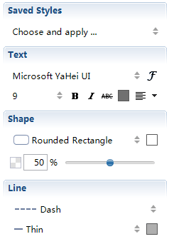

Boundary
Several topics with similar information or concepts can be grouped together within a boundary.
To add a Boundary:
- Select the target topics.
- Apply the boundary:
- Click the boundary icon on the toolbar.
- Right-click on the blank space, and select 'insert > boundary'.
- Use shortcut 'Ctrl+B'(Command+B for Mac User).
- Drag and move the slides on the edges of the boundary to change boundary scale.

Note: Subtopics under different branches or different father-topics can not be in one boundary.
To add the Boundary text.
- Select the boundary.
- Type the description, and click "Enter" to finish.
To change Boundary properties:
- Select the boundary.
- Open the Properties View.
- You can change the following boundary settings:
- Boundary Shape, Background color, Fill opacity.
- Line style, color.
- Boundary text font, size, color, and etc.
